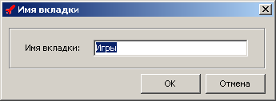

Данное окно служит инструментом для переименования вкладки. Вызвать его можно, щелкнув правой кнопкой мыши по названию нужной вкладки в главном окне и в появившемся меню выбрать пункт "Переименовать". Также вызвать окно можно, нажав клавишу F2.
Для переименования вкладки нужно указать в поле "Имя вкладки" в данном окне нужное Вам имя и нажать кнопку ОК.